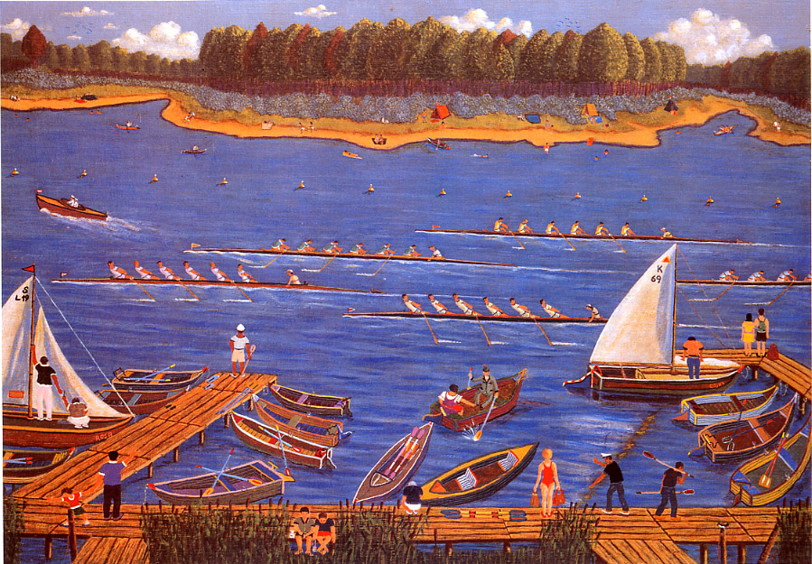

Siegfried L. Kratochwil is recognized as one of the best Austrian naive painters. He was born in 1916 in Karlstift (Lower Austria). He attended school in Vienna. "Even as a child, nothing meant more to me than nature and the outdoors." After enrolling in a trade school he became a technician and tool maker. Due to hardship, he was forced to try his hand at various professions. He married in 1939. His ill health kept him from military duty. Below are some selected paintings among his most significant primitivism masterpieces.